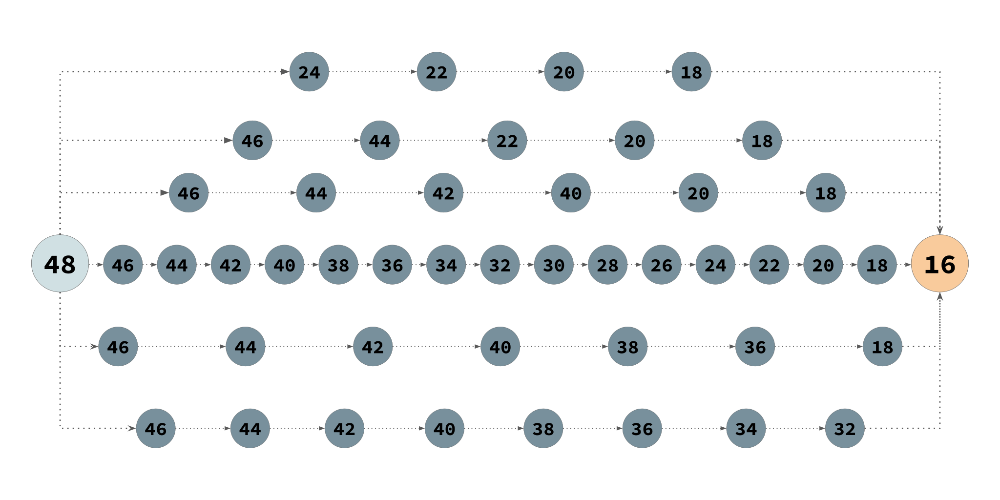
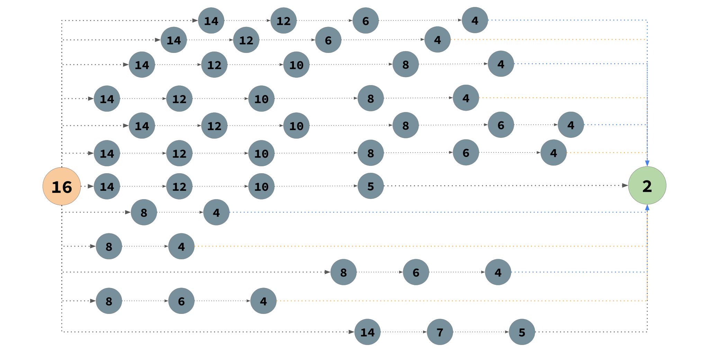
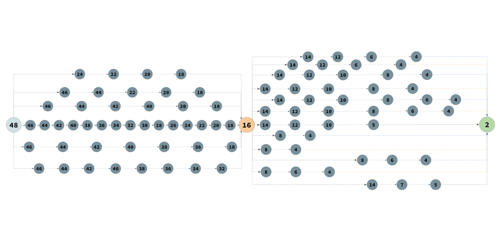
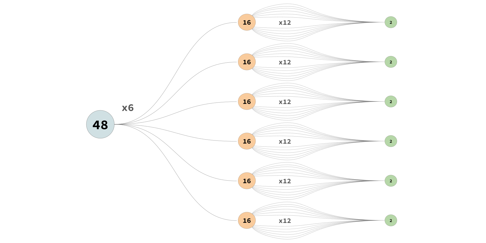
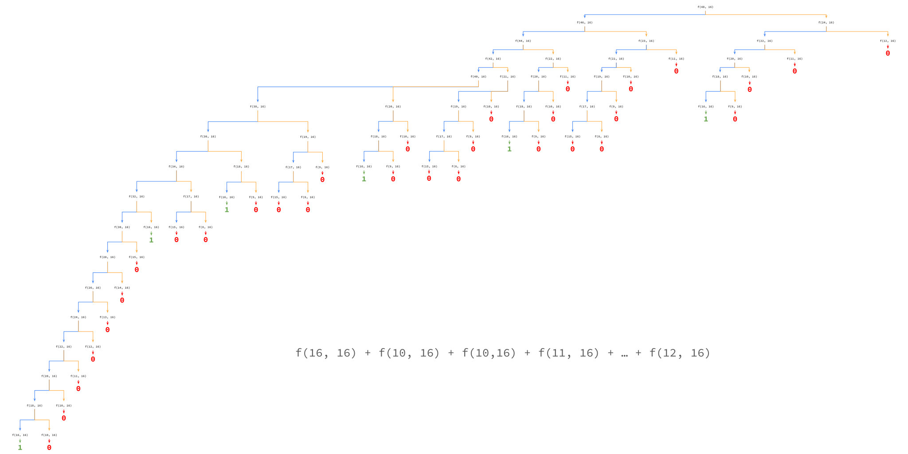
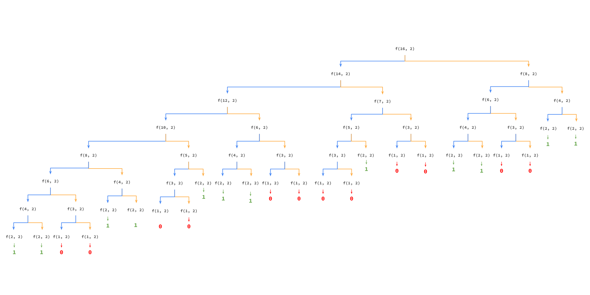

Исполнитель преобразует число, записанное на экране. У исполнителя есть две команды, которые обозначены латинскими буквами:
Программа для исполнителя - это последовательность команд.
Сколько существует программ, для которых при исходном числе 48 результатом является 2, при этом траектория вычислений содержит число 16?
1. Во-первых, рассмотрим все возможные способы из числа 48 получить число 16 с помощью заданных команд.

Как видно на рисунке выше, таких путей получилось 6.
2. Во-вторых, рассмотрим все возможные способы из числа 16 получить число 2 с помощью заданных команд.

На этом графе видно, что из числа 16 в число 2 существует 12 различных путей.
3. В-третьих, попробуем определить сколько путей из числа 48 приводят к числу 2 и проходят через число 16.
Для этого совместим оба полученных графа из шага 1 и 2.

4. Итоговый расчет количества программ.

Итак, чтобы получить количество путей из 48 в 2, проходящих через 16, мы должны перемножить количество путей из 48 в 16 (6 путей) и количество путей из 16 в 2 (12 путей).
Итого: 6 * 12 = 72 программы.
# Функция для подсчета программ из x в y
def f(x, y):
if x < y:
return 0
if x == y:
return 1
return f(x - 2, y) + f(x // 2, y)
# Решение задачи
print("Программ из 48 в 16:", f(48, 16))
print("Программ из 16 в 2:", f(16, 2))
print("Всего программ из 48 в 2 через 16:", f(48, 16) * f(16, 2))1. Во-первых, познакомимся с понятием Рекурсия
Рекурсия — это когда функция вызывает саму себя для решения меньшей версии той же задачи. Представь, что у тебя есть матрешка: чтобы добраться до самой маленькой, ты последовательно открываешь каждую большую матрешку, пока не найдешь самую маленькую. Так же работает рекурсивная функция: она решает большую задачу, разбивая её на более мелкие задачи того же типа, пока не дойдет до самого простого случая, который можно решить сразу (это называется "базовый случай").
2. Во-вторых, как работает этот код:
На вход функция f(x, y) принимает 2 числа:
x — текущее число на экранеy — конечное число, которое мы хотим получитьБазовые случаи:
x < y — значит мы "пролетели мимо" конечного числа и больше в него не попадём. Такая траектория нам не подходит, возвращаем 0.x == y — мы достигли цели! Эта траектория подходит, возвращаем 1.Рекурсивный шаг:
Если мы ещё не достигли цели, то применяем обе команды и суммируем результаты:
f(x - 2, y) — применили команду "вычти 2"f(x // 2, y) — применили команду "раздели на 2 (целочисленно)"Таким образом, функция считает ВСЕ возможные последовательности команд, которые приводят из x в y.
Наглядная демонстрация работы рекурсивной функции:
Из 48 в 16:

На этом дереве видно, как рекурсивная функция перебирает все возможные пути из 48 в 16. Каждый узел — это вызов функции f(x, 16). Листья дерева — это базовые случаи (либо x=16, либо x<16).
Из 16 в 2:

Аналогично, это дерево показывает все возможные пути из 16 в 2. Обратите внимание, как функция вызывает сама себя для каждого возможного следующего шага.
Итоговый расчет:
Программ из 48 в 16: f(48, 16) = 6
Программ из 16 в 2: f(16, 2) = 12
Всего программ из 48 в 2 через 16: 6 × 12 = 72 программы